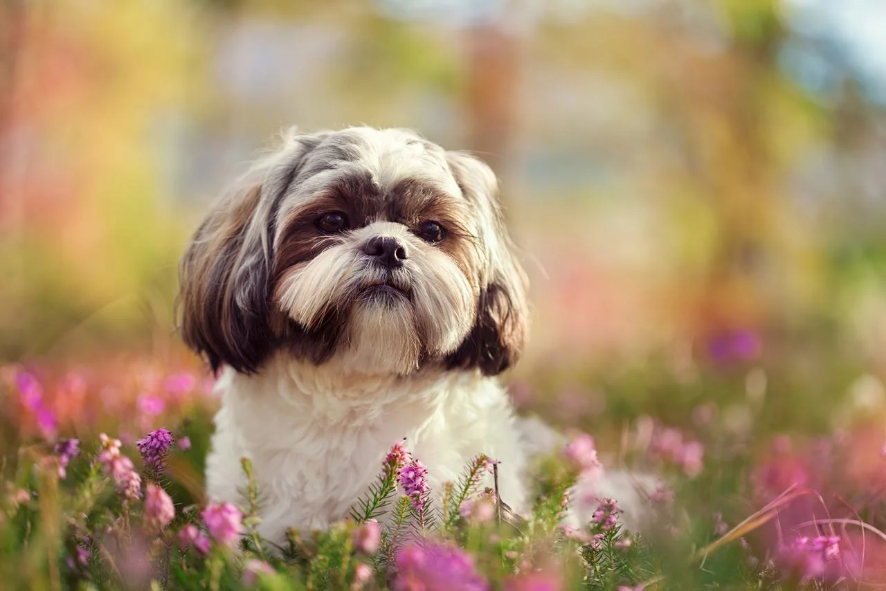
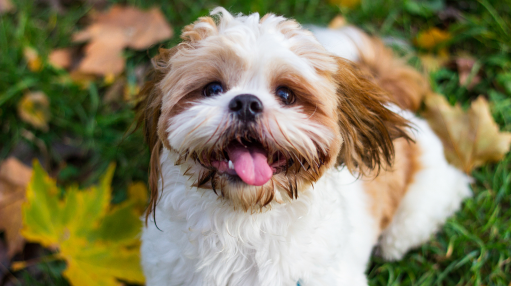

SHIH TZU



O Shih Tzu é uma raça de cachorro pequena e muito popular, conhecida por seu temperamento dócil e aparência encantadora. Originário do Tibete e desenvolvido na China imperial, o nome “Shih Tzu” significa “cão leão”, pois sua aparência lembra os leões das antigas esculturas chinesas.
🐶 Características principais:
- Tamanho: pequeno, geralmente pesa entre 4,5 e 8 kg.
- Pelagem: longa, lisa e sedosa, exigindo escovação frequente.
- Personalidade: carinhoso, sociável e brincalhão.
- Comportamento: se adapta bem a apartamentos, adora estar perto dos donos e é ótimo com crianças e outros animais.
💡 Curiosidades:
- Era considerado um cão sagrado e de companhia da realeza chinesa.
- Apesar da aparência elegante, é um cão bastante resistente e ativo.
- Gosta muito de atenção e pode ficar triste se passar muito tempo sozinho.